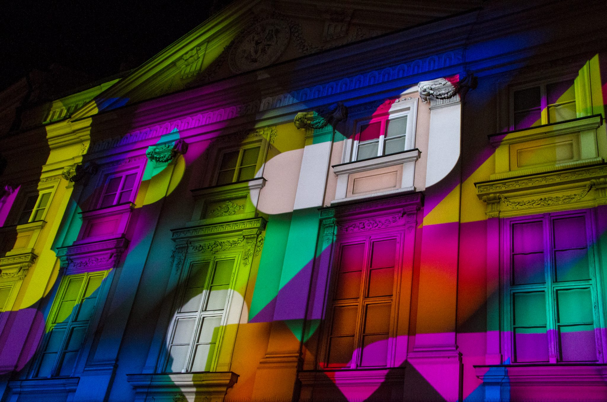

August 2018
INSIDE OUT beim Genius Loci Festival 2018
Mit 5 Elements haben 4 Freunde und ich ein Medienfassaden-Konzept für die Bibiothek der Bauhaus Universität in Weimar entwickelt.
INSIDE OUT (SHORTDOCU MAB) from José Buendía on Vimeo.
Mai 2017
SMALL TALKS für Urbanscreen
Im Rahmen meines Praktikums bei Urbanscreen kam ich erstmalig mit Projection Mapping und Animation in Berührung. SMALL TALKS wurde zum Anlass des 50. Jubiläums des Goethe Instituts in Krakau produziert und erzählt eine Geschichte von Kommunikation auf grafischer Ebene. In diesem Projekt habe ich den Party-Teil zu animieren übernommen und konnte mit Processing und After Effects einen chönen Würmchen-Wusel auf die Leinwand bringen.
{kind=link}
September 2016
Technology for Freedom
Meine Bachelorarbeit handelt vom Einstieg des Computers in die Kunst. Mein Betreuer Frieder Nake war damals Mitglied der europäischen Künstlerbewegung "Neue Tendenzen", deren Magazine "bit international" ich gelesen habe und die mir die Inspiration zu diesem Film gaben. Ich stelle eine stets aktuelle skeptische Sicht auf die Digitalisierung dar. In diesem Fall die Digitalisierung der Aesthetik.
Technology for Freedom from eikebuff on Vimeo.